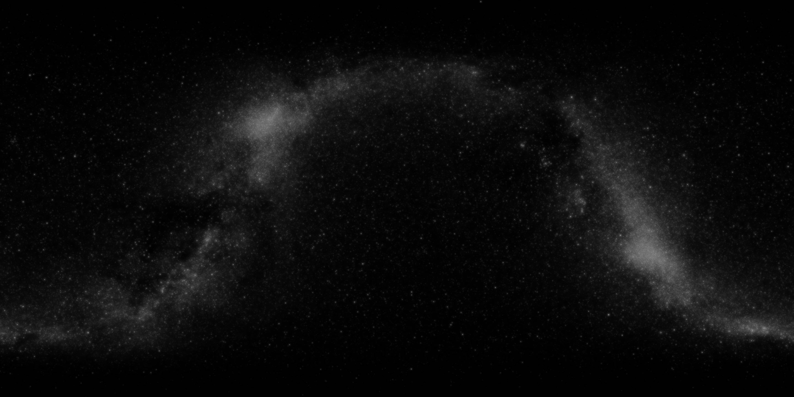

<html>

<head>
    <script src="https://aframe.io/releases/0.5.0/aframe.min.js"></script>
</head>

<body>
    <a-scene>
        <a-assets>
            <a-mixin id="cube" geometry="primitive: box"></a-mixin>
            <a-mixin id="cube-hovered" material="color: magenta"></a-mixin>
            <a-mixin id="cube-selected" material="color: cyan"></a-mixin>
            <a-mixin id="red" material="color: red"></a-mixin>
            <a-mixin id="green" material="color: green"></a-mixin>
            <a-mixin id="blue" material="color: blue"></a-mixin>
            <a-mixin id="yellow" material="color: yellow"></a-mixin>
            <a-mixin id="sphere" geometry="primitive: sphere"></a-mixin>
        </a-assets>

        <a-entity position="0 2.2 4">
            <a-entity id="camera" camera look-controls position="0 0 0">


                <a-entity position="0 0 -3" geometry="primitive: ring; radiusOuter: 0.30;
                          radiusInner: 0.20;" material="color: cyan; shader: flat" cursor="maxDistance: 30; fuse: true">
                    <a-animation begin="click" easing="ease-in" attribute="scale" fill="backwards" from="0.1 0.1 0.1" to="1 1 1" dur="150"></a-animation>
                    <a-animation begin="fusing" easing="ease-in" attribute="scale" fill="forwards" from="1 1 1" to="0.1 0.1 0.1" dur="1500"></a-animation>
                </a-entity>


            </a-entity>
        </a-entity>


        <a-entity position="3.5 1 0" rotation="0 45 0">
            <a-entity mixin="cube blue" cursor-listener>

            </a-entity>
        </a-entity>

    </a-scene>
    <script>
        // Component to change to random color on click.
        AFRAME.registerComponent('cursor-listener', {
            init: function () {
                var camera = document.querySelector('#camera');


                camera.prepend('<div>lol</div>');
                //                camera.setAttribute('position', "0 0 10");
                this.el.addEventListener('click', function (evt) {
                    console.log('I was clicked at: ', evt.detail.intersection.point);
                });
            }
        });
    </script>

</body>


</html>

<!--IGNOOORE BELOW!!!-->
<!--
<html>

<head>
    <meta charset="utf-8">
    <title>Microcosm</title>
    <meta name="description" content="Microcosm — VR">
    <script src="https://aframe.io/releases/0.5.0/aframe.min.js"></script>
</head>

<body>

    <a-scene>
        <a-assets>
            
            
            
        </a-assets>


        <a-entity camera look-controls>
            <a-entity position="0 0 -3" geometry="primitive: ring; radiusOuter: 0.05;
                          radiusInner: 0.03;" material="color: white; shader: flat" cursor="maxDistance: 30; fuse: true">
                <a-animation begin="click" attribute="scale" to="1 1 1"></a-animation>
                <a-animation begin="fusing" attribute="scale" to="0.5 0.5 0.5"></a-animation>
            </a-entity>
        </a-entity>


        <a-entity ui position="1.7 0 -2" rotation="0 -40 0" cursor-listener>
            <a-entity button position="0 0 -3.2">
                <a-animation attribute="position" from="0 0 -3" to="0 0 0" delay="1900" dur="1100" fill="forwards"> </a-animation>
                <a-image src="#btn_frame" position="0 0 -3" scale="1 1 1">
                    <a-animation attribute="scale" from="1 1 1" to="2 2 2" delay="1900" dur="1100"></a-animation>
                </a-image>
            </a-entity>

            <a-entity button position="0 0 -3">
                <a-animation attribute="position" from="0 0 -3" to="0 0 3" delay="1000" dur="1900" fill="forwards"> </a-animation>
                <a-image src="#start" position="0 0 -3" scale="1 1 1">
                </a-image>
            </a-entity>
        </a-entity>


        <a-sky src="#space" rotation="0 0 0"></a-sky>


    </a-scene>
</body>


</html>-->